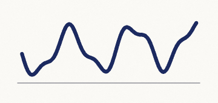

Checking images…
Portraits — YuNet should find one face in each
Synthetic. No real person appears on this page. Measured at 0.92 confidence through the shipped weights; the redaction gate is 0.50.


Controls — YuNet should find nothing in any of these
Measured: zero detections each, even with the threshold dropped to 0.15.
A face attributed to one of these is a false positive.

How to run it
- Open this page and make it the active tab, with the portraits visible.
- Click the extension's toolbar button — that is what grants
activeTab. - Press Load model and wait for Model to read
loaded. - Tick Run local vision model. It is in the Agent server card, not under Runtime.
- Type any goal —
check the photosis fine, it has no matching control so the run ends after one step — and press Run task.
Reading the result
The panel's redaction table groups by kind and strategy and does not show which channel found something, so these three are what actually answer the question.
| Signal | Vision ran | It did not |
|---|---|---|
| Detections stat | 4 or more | 0 |
Timeline vision line |
4 box(es) via wasm |
0 box(es) via stub, or no line |
| Redacted table | face rows, blur |
only id-document and signature |
The Detections counter is incremented in exactly one
place in the whole panel reducer — inside case 'vision/done'.
DOM detections never touch it. Despite the generic label, that number
is the YuNet box count.
If it finds nothing
Ways vision silently does nothing while the step still reports success.
- The checkbox has no
checkedbinding. It renders unticked every time the panel opens, whatever the background actually holds — so clicking it after reopening turns vision off. Watch for the notice at toggle time. - The breaker is latched. Three consecutive detect failures disable vision for the life of the background context. Only Run task resets it; reload the extension if in doubt.
- The model was never loaded —
detect,retainandbakeall refuse without it. - The images were below the fold. Only the visible viewport is captured.
- The Backend row is not evidence. It shows the provider that was requested at load time, not the one that ran.
Before blaming the browser, run
npx tsx test-site/verify-vision.ts. That scores these exact
files through the same weights, the same decoder and the same ORT wasm
build in Node. If it passes there and finds nothing here, the difference
is the browser.